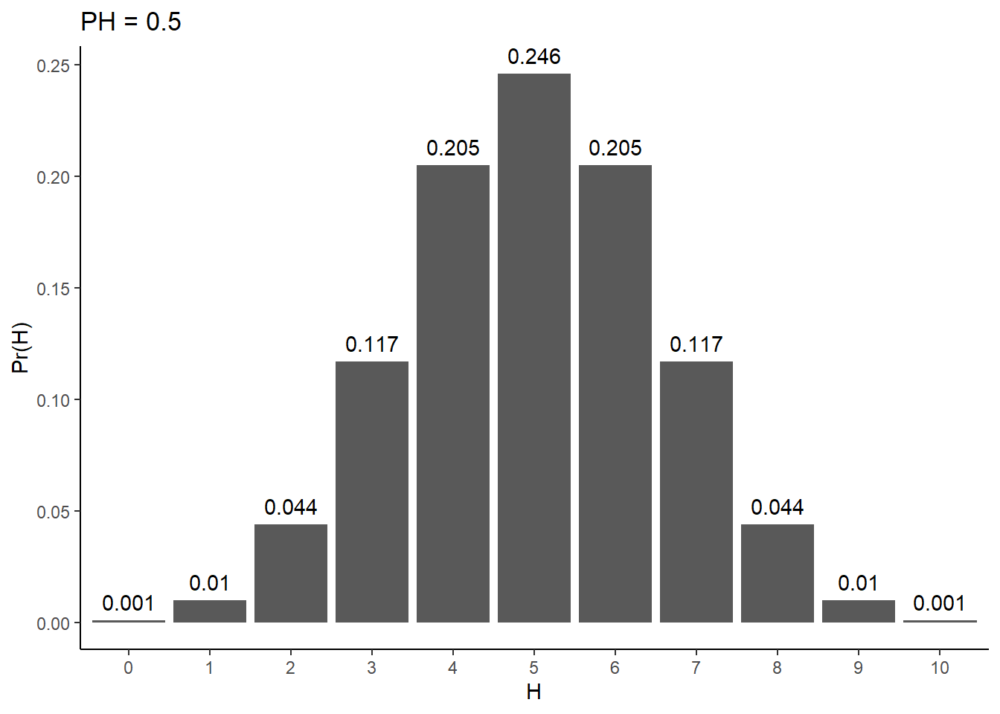
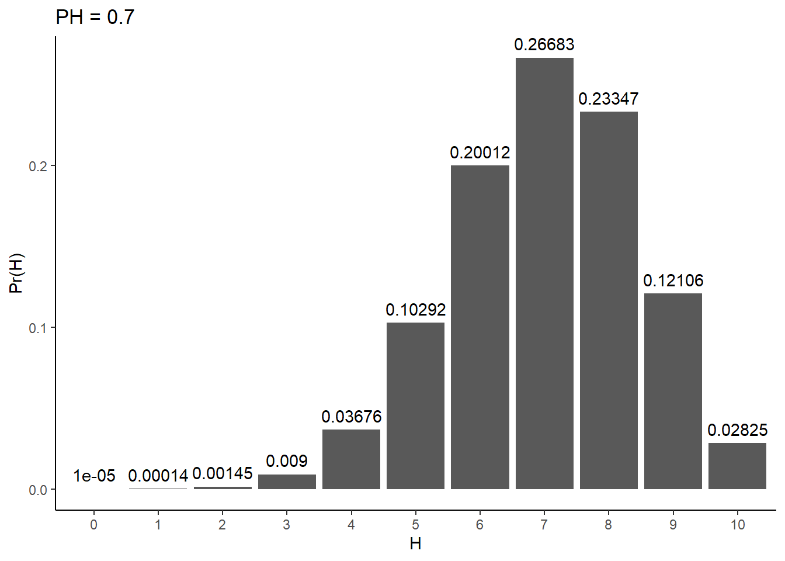
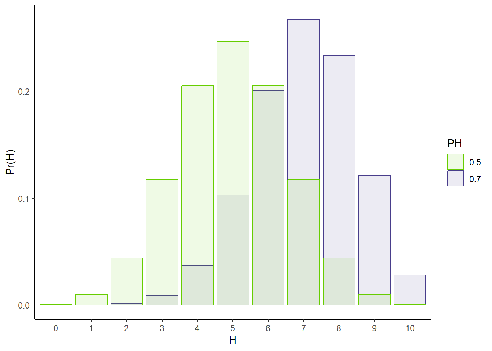
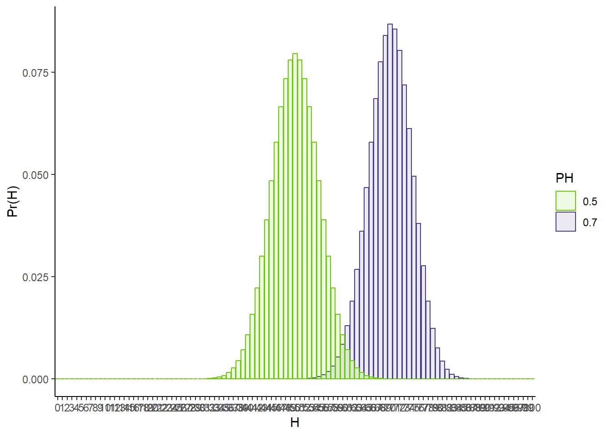

Your task, if you choose to accept it, is to answer the question that titles this section: “Does your data support your hypothesis?”. In this post, we are going to journey to the depths of this question to understand the challenges it poses and the ways we can go about tackling it. During this exploration, we will discover null-hypothesis significance testing (NHST), a strategy that dominates almost every field of modern science. What we will find though, is that NHST is not the definitive solution to our quandery. It is a cheap hack that offers us an easy way out at the cost of falling short of our original goal. Despite the imperfections of its solution, it is not without merit though, and we will attempt to understand why it’s ok to give up sometimes.
Throughout this post, I will share some code to reproduce key results and figures. This code is in the loved and hated “programming language” R. If you don’t know how to write and run R, don’t worry, you can still follow along. It might be a fun exercise to pick it up and play around with some of the “simple” code in this post though. If that sounds interesting to you, check out my post on the basics of writing and running R code.
Running R code
The toy example: is this coin fair?
It’s always best to start simple and understand our problem in the context of a toy example. An almost cliche testing ground for hypothesis testing is determining whether or not a coin is fair. Despite being overused, it will serve us well. The scenario is that you are given a coin and asked, “is this coin fair?”. A fair coin is one that when flipped, has an equal probability of showing up heads or tails.
Take a second to stop and think about how you would try to answer this question.
Step 1 has to be to collect some data. How can we know if the coin is fair if we have never seen it flipped? The path towards answering any scientific question starts with data collection. As a part of this toy example, it will be useful to work with “simulated data”. This means data that we created with a computer. The great thing about simulated data is that we know everything there is to know about how the data was created. We even know the answer to any question we could hope to ask about said data. In this case, we will “flip” a hypothetical coin 10 times and print the result. You can check out the code if you want to see what this simulation looks like. You can also check out the code if you want to see if this simulated coin is fair or not (how would you tell?):
Show the code
# Set seed to ensure consistent resultsset.seed(164)# Flip coins 10 timesflips <-rbinom(10, size =1, prob =0.5)# Convert to strings of heads (1s) and tails (0s):flips_HT <-ifelse(flips ==1, "H", "T")# Show resultscat("10 flips of the coin yielded: ", flips_HT, "\n")
10 flips of the coin yielded: H T H H H H T H H T
So in this simulation, we saw 7 heads and 3 tails.
Take some time to think about whether this is this strong evidence for or against fairness. How would you answer this question?
Assessing a coin’s fairness
We have now collected data about our coin. Step 2 is we need to find a way to analyze this data so as to assess whether or not our hypothesis of fairness is supported by the data. To help you arrive at an idea for how to do this, I will pose and discuss answers to a set of questions:
Can you definitively answer the question?
In other words, would it be possible to conclusively state “yes this coin is fair” or “no this coin is unfair” with complete certainty? Put another way, what would need to be true about flipping coins for this to be possible?
I would argue for this to be the case, we would need a certain kind of behavior from our coin. We would need the behavior of fair coins to always be distinct from that of unfair coins. For example, if fair coins always come up heads between 4 and 6 times when flipped 10 times, and a coin with any amount of unfairness always comes up head < 4 times (if it’s biased towards tails) or > 6 times (if it’s biased towards heads), then we’re set. If we see 4, 5, or 6 heads, we could automatically conclude that the coin is fair. If we see 1, 2, 3, 7, 8, 9, or 10 heads, we could automatically conclude that the coin is unfair. Any overlap in the possible outcomes of fair and unfair coins would mean that if faced with data in this realm of ambiguity, we would have no choice but to concede that we are not 100% certain that the coin is fair or unfair.
Your intuition is probably telling you that this would be absurd behavior for a coin to follow. What if a coin is only a little bit biased? Let’s say it comes up heads 51% of the time. How crazy would it be for a such a coin to come up heads 4, 5, or 6 out of 10 flips? And on the other side, would you really be that blown away if a fair coin came up heads 7 times?
Conclusion: We can only answer the fairness question probabilistically
That is to say, the best we can hope to do is to determine a probability that the hypothesis of fairness is true. This fact holds true for almost all scientific inquiries.
How can we describe the probability of a given outcome of our experiment?
Pondering the possibility of a definitive conclusion, it becomes clear that we need a way to discuss our data in terms of probabilities. We need to be able to assign a probability to any given outcome of our experiment, say 5 heads and 5 tails. In other words, we need to come up with a function that takes as input our data (and whatever else we deem necessary to specify) and produces as output the probability of seeing that data. Let’s call this our data’s “probability function”.
Actual terminology
Coming up with this function is known as “developing a statistical model of your data”. It involves making assumptions about how your data is generated, and using the basic laws of probability to determine what that says about your data’s probability function. In our case, it would be reasonable to assume the following things about your data:
Each flip of the coin is independent. This means that the probability of seeing a heads on the next flip is unaffected by what you saw on any of your previous flips.
Every flip has the same probability of coming up heads. Let’s call this probability PH.
We can then do a bit of math to figure out what this implies about seeing a certain number of heads in a certain number of flips. You can checkout the box below with extra details if you want to see what this looks like. Here, I will just present the final result and then we can explore some of its properties:
\[
\text{Pr}(\text{H heads in N flips}) = \frac{\text{H}!}{\text{H!}*\text{(N - H)!}} * \text{PH}^{\text{H}} * (1 - \text{PH})^{\text{N} - \text{H}}
\]
The full derivation
Observation 1: Parameters
These probability functions will always have “parameters”. These are required input in addition to your data necessary to generate an output. In our case, the data is “number of heads” (H). The two other numbers that make an appearance in our probability function are N (“number of flips”) and PH (“probability a given flip comes up heads”). You could consider N just more data, but PH has a very different flavor. It’s something we don’t know the value of, and in some sense the center of our interrogation. Our question of “is our coin fair?” can be reframed as “is the value of PH 0.5?” Because of this, we will want to investigate the impact that this parameter has on what we expect our data to look like.
Observation 2: Dependence on PH
Give me a value of PH and N, and I can tell you the probability of seeing any number of heads, H. Here’s what these probabilities look like for a fair coin flipped 10 times:
Show the code
library(ggplot2)library(dplyr)
Warning: package 'dplyr' was built under R version 4.3.2
Attaching package: 'dplyr'
The following objects are masked from 'package:stats':
filter, lag
The following objects are masked from 'package:base':
intersect, setdiff, setequal, union
Show the code
# Number of flipsN <-10# Probability of headsPH <-0.5# Number of headsHs <-0:N# P(H | N, PH)pofH <-round(dbinom(Hs, N, prob = PH),digits =3)tibble(pofH = pofH,H =factor(Hs)) %>%ggplot(aes(x = H, y = pofH)) +geom_bar(stat ='identity') +theme_classic() +xlab('H') +ylab('Pr(H)') +ggtitle(paste0("PH = ", PH)) +geom_text(aes(label = pofH, x = H, y = pofH), vjust =-0.6)

Are these probabilities surprising to you?
Some observations:
The most likely result for a fair coin is 50% heads and 50% tails.
The plot is symmetric about the 50/50 result. Seeing 6 heads is as likely as seeing 4 heads, seeing 7 heads is as likely as seeing 3 heads, etc.
All feasible results (0-10 flips) have some probability of occurring. This confirms our suspicion that definitively distinguishing fair and unfair coins is off the table.
While seeing 5 heads is the most likely outcome, it isn’t mind-blowingly more likely than seeing 4 or 6 heads. In fact, the probability of being 1 off of perfectly even (i.e., seeing 4 OR 6 heads) is more likely than seeing exactly 5 head. 4 and 6 heads each have probability of ~0.205, making the probability of one of these events occurring ~0.410. Compare that to the probability of 5 heads, ~0.246.
Adding probabilities
What does this plot look like for an unfair coin? Let’s set PH to 0.7 and see what happens:
Show the code
# Probability of headsPH <-0.7# P(H | N, PH)# More precision to prevent 0spofH <-round(dbinom(Hs, N, prob = PH),digits =5)tibble(pofH = pofH,H =factor(Hs)) %>%ggplot(aes(x = H, y = pofH)) +geom_bar(stat ='identity') +theme_classic() +xlab('H') +ylab('Pr(H)') +ggtitle(paste0("PH = ", PH)) +geom_text(aes(label = pofH, x = H, y = pofH), vjust =-0.6)

Compare and contrast that to the fair coin plot
To help with comparing, let’s overlap the two:
Show the code
# Probability of headsPH1 <-0.7PH2 <-0.5# P(H | N, PH)# More precision to prevent 0spofH1 <-dbinom(Hs, N, prob = PH1)pofH2 <-dbinom(Hs, N, prob = PH2)tibble(pofH =c(pofH1, pofH2),H =factor(c(Hs, Hs)),PH =factor(rep(c(PH1, PH2), each =11))) %>%ggplot(aes(x = H, y = pofH, fill = PH, color = PH)) +geom_bar(stat ='identity',position ='identity',alpha =0.1) +theme_classic() +scale_fill_manual(values =c('chartreuse3','darkslateblue')) +scale_color_manual(values =c('chartreuse3','darkslateblue')) +xlab('H') +ylab('Pr(H)')

Observations:
The most likely result is 7 heads and 3 tails. Do you notice a pattern? Check out the box below for details. In short, its no coincidence that the most likely result equates to the product of N and PH. Try setting PH to something such that PH * N is not an exact integer. Guess what number of heads will be most likely and check your intuition.
The distribution is no longer symmetric
The most likely result
How can we determine the probability of fairness?
With a probability function in hand, we can now begin tackling our main challenge: determining the probability our coin is fair.
An intuitive but wrong choice: Pr(data | PH = 0.5)
We want to know how likely our hypothesis of a fair coin is given the data we collected. We have at our disposal a probability function for our data. The easiest thing you could think to do is plug in our data and hypothesized value of PH into this formula and take the probability we get out as the probability our hypothesis is true. For 7 heads in 10 flips we get:
Show the code
# Show resultscat("Pr(7 H | PH = 0.5): ", round(dbinom(7, 10, 0.5), 3), "\n")
Pr(7 H | PH = 0.5): 0.117
This seems like a reasonable ballpark. 7 heads seems a bit weird for a fair coin, and we saw a string of 4 straight heads in our dataset, which is surprising. At the same time, 10 flips isn’t much, and so a couple extra heads isn’t crazy. An 11.7% chance that our hypothesis is correct kinda feels right.
Whenever we think we have an answer, its best to scrutinize it like a skeptic. What if we had our coin a lot more times? Say we flipped it 100 times instead of 10. If we had gotten exactly 50 heads in this case, how confident should we be that our coin is fair? More or less than in our 7 heads in 10 flips result?
Let’s check and plug 50 heads in 100 flips to our probability function:
Show the code
# Show resultscat("Pr(50 H | PH = 0.5, N = 100): ", round(dbinom(50, 100, 0.5), 3), "\n")
Pr(50 H | PH = 0.5, N = 100): 0.08
Woah, that’s lower than the 7 h;eads in 10 flips case! How about if we got exactly 500 heads in 1000 flips
Show the code
# Show resultscat("Pr(509 H | PH = 0.5, N = 1000): ", round(dbinom(500, 1000, 0.5), 3), "\n")
Pr(509 H | PH = 0.5, N = 1000): 0.025
It’s even lower!! That’s evidence that our strategy is missing something. What’s going on?
It might be helpful to go back to our full probability function. What does it look like for a fair coin vs one possible unfair coin, each flipped 100 times?
Show the code
# Probability of headsPH1 <-0.7PH2 <-0.5# P(H | N, PH)# More precision to prevent 0spofH1 <-dbinom(0:100, 100, prob = PH1)pofH2 <-dbinom(0:100, 100, prob = PH2)tibble(pofH =c(pofH1, pofH2),H =factor(c(0:100, 0:100)),PH =factor(rep(c(PH1, PH2), each =101))) %>%ggplot(aes(x = H, y = pofH, fill = PH, color = PH)) +geom_bar(stat ='identity',position ='identity',alpha =0.1) +theme_classic() +scale_fill_manual(values =c('chartreuse3','darkslateblue')) +scale_color_manual(values =c('chartreuse3','darkslateblue')) +xlab('H') +ylab('Pr(H)')

Considering all possible hypotheses
Considering prior experiences/data
The easy way out: NHST and p-values
p-values vs the actual solution
Why I still use p-values
Unique aspects of my use case:
Statistical pragmatism
EDA and list ordering
Orthogonal validation
Multiple testing
Appendix
Controlling a coin’s PH
Fun fact: regardless of how screwy your coin is, it can always be made perfectly fair with a simple trick (and a few assumptions). What you do is you define a “flip” as the result of two independent flips. If your two flips have the same result (i.e., both heads or both tails), you throw it out and try again. If you get heads on one flip and tails on the other, then your “flip” is whatever the first flip came up as. That is, if you flipped heads then tails, call that “heads”. If you flipped tails then heads, call that “tails”.
Why is this perfectly fair? Assume that each flip is independent, and has the same probability p of coming up heads. The probability of heads then tails is then p * (1 - p). The probability of tails then heads is then (1 - p) * p. Due to the commutativity of multiplication of real numbers (a * b = b * a), these two probabilites are the same. This means the probability of a “heads” is the exact same as that of a “tail”, regardless of how biased your coin is.
Exercise for the reader: now that you can craft a fair coin from a biased one, can you use a fair coin to redefine flips such that the probability of “heads” is any real number between 0 and 1? This is one of my favorite probability theory puzzles.
Hint
Step 1 is to express your desired probability of “heads” in binary (i.e., base 2 representation).